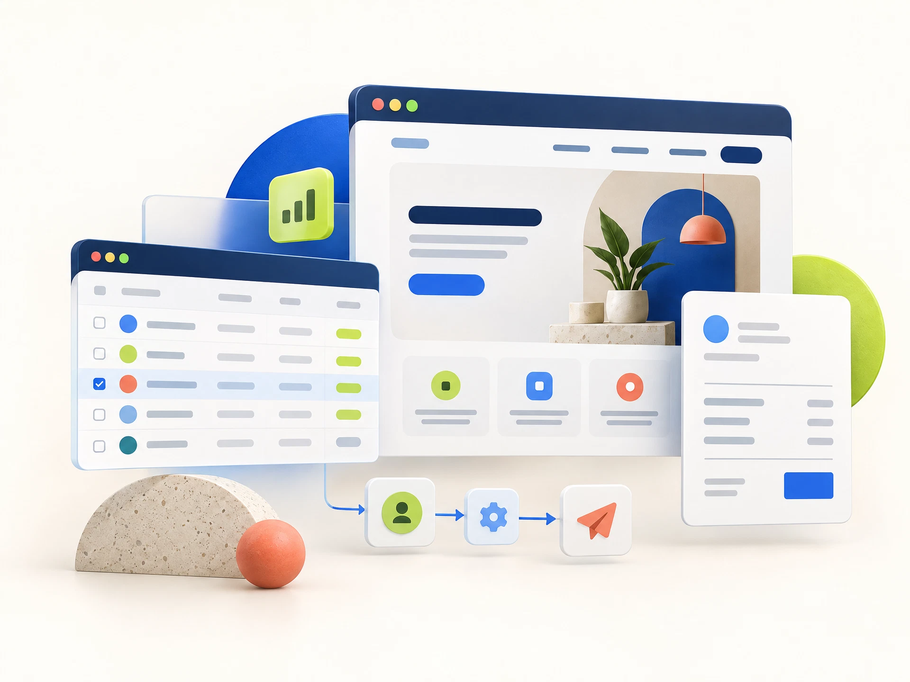
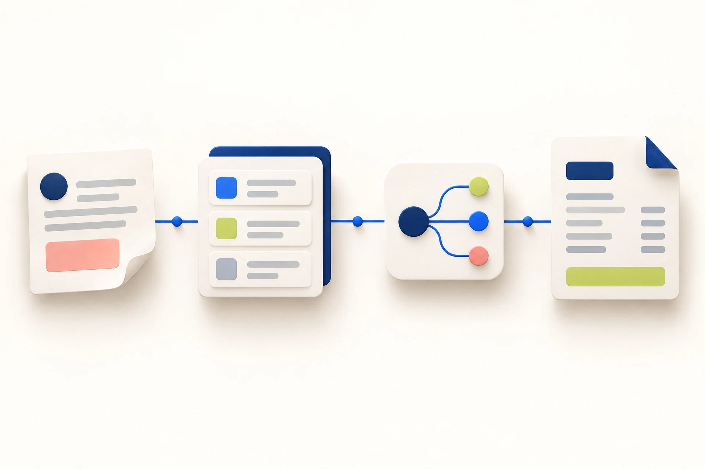

01 / WEB
Páginas web
que te representan.
Una página para explicar qué vendes, mostrar tus servicios y facilitar que tus clientes te contacten.
Hablemos de tu webSoluciones para el trabajo de todos los días
¿Anotas ventas en varios lugares, pierdes tiempo con tareas repetidas o no sabes cuánto vendiste? Creamos páginas web y herramientas sencillas para organizar tu información y entender mejor tu negocio.

En qué te podemos ayudar
No tienes que saber si necesitas una base de datos, una aplicación o Power BI. Cuéntanos qué se te complica y te explicamos una opción clara.
Una página para explicar qué vendes, mostrar tus servicios y facilitar que tus clientes te contacten.
Hablemos de tu webSi copias los mismos datos o mandas avisos a mano, podemos automatizar algunos pasos. Por ejemplo, avisar al equipo cuando llega un pedido.
Simplifica un procesoUn registro ordenado para guardar y buscar información sin depender de varias hojas o libretas. Por ejemplo: qué vendiste y qué productos quedan.
Ordena tu informaciónHerramientas para registrar facturas y consultar pagos pendientes. Revisamos contigo los requisitos de facturación de tu país antes de definir la solución.
Cuéntanos cómo facturasUna aplicación hecha para las tareas de tu equipo y conectada a tus registros, si eso es lo que necesitas. Que sea local no significa automáticamente que funcione sin internet.
Cuéntanos qué necesitasPower BI u otra herramienta convierte tus datos en gráficos: por ejemplo, ventas por mes o productos más vendidos. Primero necesita datos para mostrar.
Diseña tu tableroEn palabras sencillas
Piensa en el registro como el lugar donde guardas la información, y en el reporte como el resumen que te ayuda a entenderla.
Como un archivo ordenado: guarda clientes, ventas, pedidos o inventario para encontrarlos después.
Como un resumen con gráficos: muestra cómo van las ventas o qué productos se mueven más. Usa datos que ya tienes.
Hace tareas repetidas por ti, como enviar un aviso o copiar información entre herramientas compatibles.
Ejemplos visuales
Las pantallas de abajo son demostraciones para explicar las ideas. No son proyectos de clientes ni muestran datos reales.
Un sitio claro y expresivo para explicar servicios y convertir visitas en conversaciones.
Un ejemplo de cómo consultar quién hizo un pedido y si ya está listo. Las cifras de la imagen son inventadas.
Un ejemplo ilustrativo de una pantalla para consultar registros; no es un sistema fiscal certificado.
Una idea de cómo podría organizarse el trabajo diario desde una aplicación instalada en la computadora.
Un ejemplo de gráficos que se pueden crear cuando tus datos están disponibles y organizados. Cifras ilustrativas.
Paso a paso
No necesitas llegar con una solución técnica. Cuéntanos qué haces hoy, qué te quita tiempo y qué te gustaría controlar mejor.
Por ejemplo: “no sé cuánto inventario me queda”.
Te decimos qué se necesita y qué no hace falta.
La revisamos contigo y la ajustamos a tu trabajo.
Te explicamos cómo empezar y qué sigue.

El resultado que buscamos
La idea es sencilla: que encuentres tus datos, sepas qué está pendiente y tomes decisiones con más información.
Clientes, pedidos y productos organizados para consultar cuando los necesitas.
Automatiza tareas repetidas cuando tus herramientas se puedan conectar.
Consulta reportes de ventas, inventario u otros datos de tu negocio.
Una página web clara ayuda a tus clientes a conocerte y contactarte.
Hablemos en sencillo
Cuéntanos cómo llevas hoy tus ventas, clientes o inventario. Si no sabes qué herramienta necesitas, selecciona “Necesito orientación”.